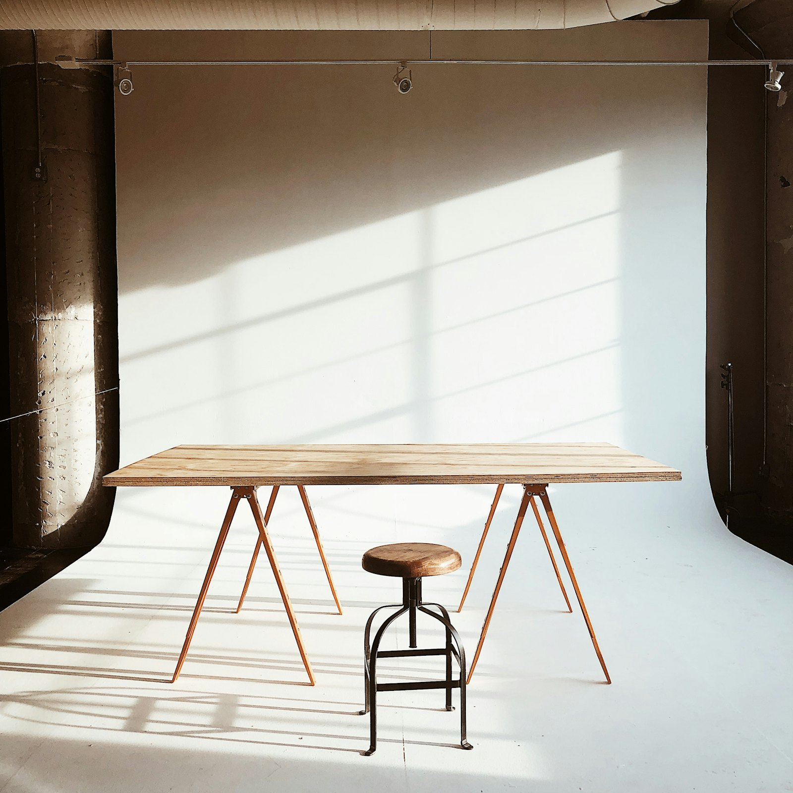
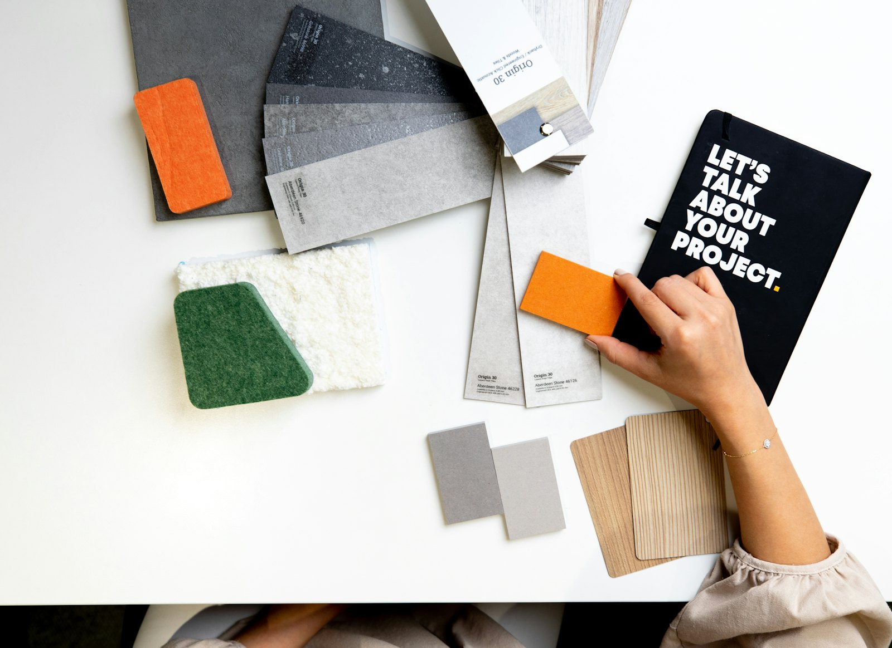
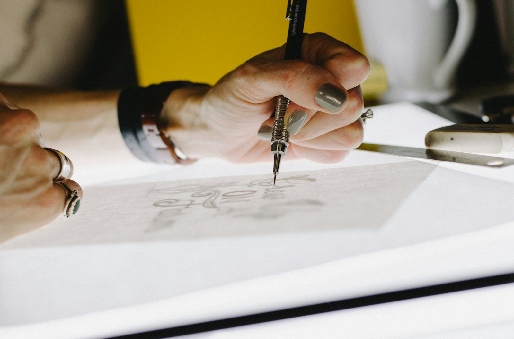

Brands
built
from the
counter
out.
Est. 2011 · Old Print Hall, Leith · Projects No. 001–148
Counterform is an independent brand and digital design studio. Nine of us draw identities, typefaces and websites for companies that make real things, starting inside the letter and working out.



Row.Bakers on Leith Walk since 1987
Four of the last forty.
01Selected work · 2023–2025Each one started as a single letter we couldn't stop redrawing. Open one to read how it went.
-
A two-person workshop selling flat-pack trestles. We drew a wordmark whose A is a trestle, then built a shop where every table can be configured to the centimetre.
Start something similar -
A stone-and-felt supplier with 600 finishes and no system. We named it, set a numbering grammar for every swatch and printed the catalogue on the samples themselves.
Start something similar -
A gin distillery wanted its founder's handwriting on the bottle. We traced 1,200 letters on the lightbox and cut a script with 340 alternates so no two labels repeat.
Start something similar -
A bakery on Leith Walk. A wordmark heavy enough to read through a steamed window, and a website that only shows what comes out of the oven today.
Start something similar
Strategy & letters, in that order.
02PracticeWe work on four things and turn the rest down. Every engagement runs through the same table, the same nine people, and usually the same ampersand.
- iNaming & positioning
- What you are called and the one sentence you can defend.
- iiIdentity systems
- Marks, grids, colour and the rules that keep them honest.
- iiiCustom typefaces
- Display cuts and full families, drawn and spaced in house.
- ivWebsites & motion
- Built by the people who drew the letters, so nothing gets lost.
Fig. 3 — galley proof, pulled in the hall
Nine people. One long room. No account managers.
03StudioThe person who answers your first email draws your mark, sets your type and ships your site. We stay small on purpose, take six projects a year, and keep the lamps on the desks we started with.
Partners Isla Marr and Kofi Benn founded the studio in a former letterpress hall; the composing stones are still under the floor.
Rough first. Set last.
04MethodEvery project goes the way one letter does: from an empty grid, through pencil, to set type. Scroll the four stages.
01Clear the table
Two days in your workshop, kitchen or warehouse before we open a laptop.
02Draw it badly
Fifty pencil roughs, pinned up and argued over with you in the room.
03Draw it well
One direction, drawn properly, set in type and tested on real things.
04Ship and stay
Launch, then a year of check-ins so the system survives the first intern.
Bring the brief. We'll clear the table.
05Start a projectNext start February 2027. Identity projects from £38,000, typefaces from £24,000. A partner replies within two working days.